Abstract
Bilinguals are traditionally classified into a category to define their type of bilingualism. This category would be based on how a bilingual learned the languages. Theoretical and empirical evidence will illustrate that while the existing categories are adequate on a macro scale, the existing categories become less suitable at a micro scale. The evidence demonstrates that, at the individual level, bilingualism is a dynamic phenomenon and the dynamics are caused by a range of factors depending on the individual. The results of this study demonstrates that categorisation provides minimal value, whereas language proficiency is a more effective indicator of an individual’s current state of bilingualism.
I would like to thank the four participants that made this dissertation possible. I would like to thank Adam Gardner for convincing me to move to England to finish my degree, for his unconditional love, support, and faith in me. A special thanks to Tim Wharton for accepting my application at the University of Brighton and opening the door of knowledge in the field of Linguistics. This paper would not have existed without the input of Pamela Perniss and there are no words to express my gratitude to her. Finally, I would like to thank my supervisor Simon Wilkinson for believing, trusting and supporting my ideas, but above all, for his honesty and guidance which kept me focussed on my main question.
Bilingual speakers can be divided and categorised based on a variety of factors, this categorisation is traditionally done at a macro level (i.e. based on a large sample of bilinguals). This study investigates, discuss and analyse these categories based on the existing literature. In addition, this study evaluates the different classification patterns for bilinguals on a macro scale and investigate their suitability and relevance when applied on a micro scale.
Traditionally, the term bilingualism was regarded as a static model where individuals were classified into a category on a macro scale and this category did not change. Empirical evidence gathered from a sociolinguistic questionnaire demonstrates that, due to the law of large numbers (law of averages), while the existing categories are adequate for large sample sizes, the existing categories become less relevant at smaller sample sizes, and at an individual level. The evidence illustrates that, at an individual level, bilingualism is a dynamic phenomenon and that critical data is lost when individuals are evaluated at a macro scale.
This study researches the different patterns of bilingualism and show how dynamic these patterns can be over time, to answer the following question: Relevant frameworks and background literature are presented and evaluated in chapter 2. The methodology is presented in chapter 3. The answers of the participants are analysed and discussed in chapter 4 and the conclusion is provided in chapter 5.
An individual’s bilingual outcome (i.e. category) has traditionally been based on the child’s bilingual input (i.e. how the languages were learned from birth). The existing literature gives a range of different bilingual categories, this paper uses the categories provided by Romaine (1995) and Weinreich (1968), and discuss the suitability at a macro and micro level. Romaine exclusively focusses on early bilingualism whereas Weinreich’s theory can be applied to both early and late bilinguals (Hoffman 1991; Pavlenko 2014; Silvanto and Rees 2017; Saville-Troike 2010; Thompson-Schill et al 2009).
To provide an overview of these traditional views and their potential benefits or deficiencies, this chapter discusses three areas: Bilingual Categories; The Impact of Culture; The Dynamics of Language and Related Factors. The background literature and the analysis of the results in chapter 4 provides the necessary evidence to answer the questions: The existing literature focusses primarily on children and in particular, children within the home environment. Is it possible for a bilingual’s category to change as they transition into adulthood? Can a change in environment (e.g. culture or country) affect language use and therefore change the categorisation of a bilingual? Do the factors which impact language proficiency affect the categorisation of a bilingual?
The existing literature creates a clear distinction between early and late bilingualism based on the age at which a person learns a language. Anyone learning a language before the age of six is classified as an early bilingual and after six a late bilingual (Hoffman 1991; Pavlenko 2014; Silvanto and Rees 2017; Saville-Troike 2010; Thompson-Schill et al 2009).
An early bilingual can be classified as a simultaneous or sequential bilingual. These subcategories are assigned based on how the parents decide to raise their children. Children simultaneously exposed to two languages from birth are simultaneous bilinguals because they learn their languages at the same time (Bialystok, 2001; Saville-Troike, 2010). Children exposed to one language from birth, and then a second language upon starting school, are sequential bilinguals because they learn their languages one after another (Bialystok, 2001; Saville-Troike, 2010). The first language an individual learns is known as their L1 and their second language is their L2.
Late bilingualism refers to any bilingual that started learning the L2 after the age of six which automatically classifies the individual as a sequential bilingual. When a late bilingual begins learning the L2, there are several factors which can influence their degree of proficiency. The importance of these factors are most likely different for each learner based on their age, how they are exposed to the L2, and the culture(s) in which they are raised (these factors are discussed in more detail in sections 2.2 and 2.3).
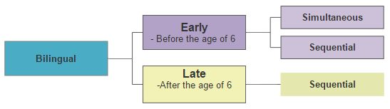
Weinreich (1968) defines three categories of bilingual speaker: compound, coordinate, and subordinate. Compound Bilinguals
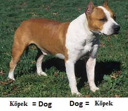
The compound bilingual has one set of concepts and two lexicons connected to each other. Compound bilinguals learn their languages in one environment and have one conceptual system that is linked to the two lexicons (Pavlenko, 2014; Heredia and Cieślicka, 2014). For example, an early bilingual who has learned both Turkish (L1) and English (L2) in England, has one mental representation for the words dog and köpek (figure 2). Weinreich (1968) suggests that it does not matter which language the bilingual is speaking, at the conceptual level, both languages are merged into one system of meaning. The bilingual sees the same mental image (figure 2) of a dog in both languages. That system of meaning comes from the culture of the country the person lives in.
In some countries, a bilingualism is a government policy, which shapes culture, and the culture shapes bilingualism. In these cases, the social organisation of language at home and school are permanent places where children use two languages. For instance, in Paraguay, people speak Spanish and Guaraní (Gynan, 2001). The language choice depends on relevance, nature of the environment, social expression and individual context (e.g. partner, family, status of community). The people in these countries have one mental representation for two languages. Thus, the country is an example of compound bilingualism on a macro scale.
However, when Paraguay’s population is viewed at a micro scale only 48% of the people speak Guaraní and Spanish, 37% are monolinguals that speak Guaraní and only 8% are monolingual Spanish speakers (Gynan, 2001). The numbers may have changed as the government research was done in 2001. However, this example does demonstrate the loss of critical information when categories are generalised at a macro level.
Coordinate Bilinguals
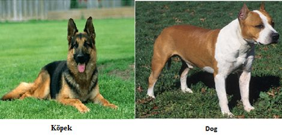
Coordinate bilinguals learn their languages in separate environments and have two conceptual systems associated with their two separate lexicons (Pavlenko, 2014; Heredia and Cieślicka, 2014). For example, a bilingual who has learned Turkish as their L1 in Turkey and English as their L2 in England has two separate concepts for the word dog (figure 3). These concepts were learned in the country or culture of the languages. Weinreich (1968) suggests that when this individual discusses dogs in Turkish, their mental imagery would focus on the left-hand image (figure 3). When English is used, the mental image of a dog would be the right-hand image (figure 3). The languages belong to different cultures and bilinguals may feel different personalities when the languages change, because they can relate to the different communities (Grosjean 2010). At an advanced level of proficiency this would be classified as two monolinguals in one person with two systems of meaning (Weinreich 1968). However, at a micro level there are differences in proficiency for each bilingual. The influences of culture and other factors are discussed in 2.2 and 2.3.
Subordinate Bilinguals
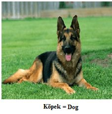
The subordinate bilingual is an L2 learner. Subordinate bilingualism is established by learning an L2 and the L2 is interpreted via the L1 (Saville-Troike, 2010:71). The L1 remains the dominant language for the learner even when the dominant language of the environment is in the L2. For example, a Turkish family moves to England and the parents take classes to learn the new language, while the children are immersed in the new language. The parents have one mental representation of the word dog (figure 3), which is the mental representation of the word dog in their L1 (Turkish). At home, the parents speak their L1, and use the L2 (English) only when needed (e.g. at work). Weinreich (1968) suggests that this type of bilingual will continue to visualise the mental representation of the L1, because this type of learner transfers the L1 with its representation to the L2. This could be due to age, lack of motivation, aptitude, or even strong ties to the culture of the L1 which prevents learners to reach the coordinate level of bilingualism (sections 2.2, 2.3 and 4 will elaborate these ideas).
Saville-Troike (2010:71) suggests the possibility of a compound and subordinate bilingual becoming a coordinate bilingual when a higher degree of proficiency in both languages has been achieved. This suggests that categories can be interchangeable and this view is analysed in sections 2.2, 2.3, and 4.
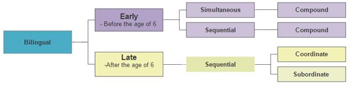
Romaine’s Categories
Romaine (1995: 183-205), introduces six subcategories of early bilingualism: Type 1 - One Person One Language The parents have different native languages with some competence in each other's language. The heritage language of one parent is the language of the country they live in (Romaine 1995:183). For example, the mother is German and the country they live in is Germany, therefore German is the dominant language. The father is English, but is capable of speaking German to the same level as the mother can speak English. Both parents speak their own native language to the children and the children can differentiate between the languages depending on whom they are conversing with (Pinker 1994). This is an example of simultaneous bilingualism (Saville-Troike 2010) and Weinreich (1968) would categorise this as compound bilingualism. Type 2 - The Parents Have Different Native Languages The language of one parent is the dominant language, however, the non-dominant language is spoken by both parents to the children at home. The purpose is to maintain the non-dominant language. The parents know that the children will learn the dominant language in school. For example, the mother is German and has a fluent level of English. The father is English and is fluent in German. The family lives in Germany and the parents choose to teach the child English inside the home as they will learn German when they go to school. This is an example of sequential bilingualism (Saville-Troike 2010) and Weinreich (1968) would categorise this as compound bilingualism. Type 3 - Non-Dominant Home Language without Community Support The parents have the same native language which is culturally the non-dominant language. The parents speak their native language with their children, because they know that the children will learn the dominant language as an L2 in school. A type 3 family resides in a country without the support of extended family members nor a community of the native culture. For example, both parents are German and they live in England, the parents decide to raise the children by only speaking German as the children will learn English when they start school. This is sequential bilingualism (Saville-Troike 2010) and Weinreich (1968) would categorise this type as compound bilingualism. Type 4 - Double Non-Dominant Home Language without Community Support Both parents have different native languages, neither of which is the dominant community language. In this case, both parents speak their native language to the child from birth. The child is a simultaneous bilingual (Saville-Troike 2010), but when the child learns the dominant language outside the home, the child becomes multilingual. For example, the mother is German, the father is English, and they live in France. Both parents speak in their own native language to the children and the children learn French when they go to school. This is a combination of sequential and simultaneous bilingualism (Saville-Troike 2010). Weinreich (1968) would classify this individual as a compound bilingual. Type 5 - Non-Native Parent Both parents have the same native language, which is also dominant in the community, but one of the parents only speaks another language to the child (e.g. both parents are German and the family lives in Germany, but one of the parents speaks only English to the child). This is simultaneous bilingualism (Saville-Troike 2010). Since the L2 language is not the parent’s native language, any errors, accents or deficiencies the parent has, will be adopted by the child. These errors may be corrected in school, if that language is on the syllabus. Weinreich (1968) would classify this individual as a compound bilingual using the mental representations of the German culture. Type 6 - Mixed Languages Both parents are bilingual and the community is bilingual. The child hears different languages from each parent and the parents also switch and mix languages. This type is complex and could have three possible interpretations, which is discussed in the section Granularity of Romaine’s Categories on the next page.
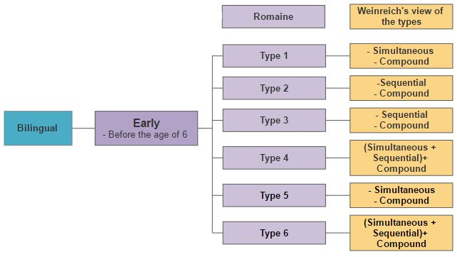
Romaine’s (1995) definitions are undoubtedly more detailed than Weinreich’s (1968), but creating more specific types creates further possible types. For example, there are at least three sub-types that can be created from Romaine’s types 3, 4, 5, and three possible types for type 6 due to its ambiguity: 3B - Non-Dominant Home Language with Community Support If the bilingual is raised in England with extended family members and a German community to learn the mental representations that belong to that language (i.e. culture), then Weinreich (1968) would suggest this type is a coordinate bilingual (this suggestion is discussed in detail in 2.2). Type 4B - Double Non-Dominant Home Language with Community Support As suggested in 3B, if the child has community support in one of the other languages, it would make the child a combination of a compound and a coordinate multilingual (Weinreich, 1968). Type 5B - Combination of Type 4 and Type 5 In some countries, it is a part of the school syllabus to learn other languages. For instance, in the Netherlands it is normal to learn English, French and German in middle and high school. If both parents are proficient enough, one could speak German and the other French to the child, because the child will learn Dutch when starting school.
Romaine’s Type 6 is ambiguous and could be divided in three groups: Type 6A: Both parents are bilingual and the community is bilingual. The family lives in Paraguay and they speak Spanish and Guaraní to the child. This is an example of simultaneous bilingualism and Weinreich (1968) would classify this as compound bilingualism. Type 6B: Both parents are bilingual and the community is bilingual. The family lives in Paraguay the mother is from Paraguay and the father is from Canada. The child learns Spanish, Guaraní, French and English. This subtype can be divided depending on the way the parents decide to raise the children (i.e. simultaneously or sequentially). Weinreich (1968) would classify this as compound multilingualism. Type 6C: One parent is from Paraguay and speaks Spanish and Guaraní to the child. The father is from Canada and speaks English and French to the child. In addition, the family lives in Switzerland where the languages vary between Swiss-German, Italian and French. This is a mix of simultaneous and sequential multilingualism. The child would become a compound multilingual with the mental representations acquired from the Swiss culture.
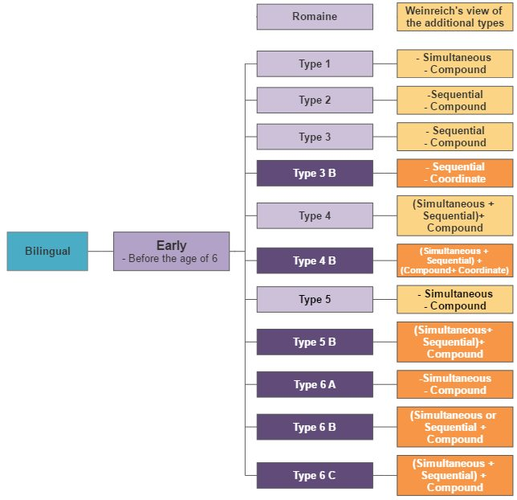
A comparison between Romaine and Weinreich illustrates that Weinreich’s theory has broader categories which are naturally more flexible (figure 7). Weinreich’s and Romaine’s categories are most commonly applied at a macro level. However, these categories also apply at the micro level (i.e. individuals) independently of the conditions at the macro level. At the micro level, the categorisation depends on the variables and life choices of the bilinguals. These individual variables and differences is discussed in sections 2.2 and 2.3.
Conceptual representations of language are based on the cultural knowledge of the individual. According to Weinreich’s (1968) model, these representations are the key components that determine someone’s category. Saville-Troike (2010:134) argues that the definition of everything that a speaker needs to know to communicate appropriately within a particular community is: Linguistic competence: Knowledge of specific components and levels of language and the knowledge that is required for their appropriate use. Pragmatic competence: The ability to use language appropriately according to the norms of the language community (culture). Knowledge of culture includes an understanding of the wider social structures and practices that influence norms and conventions of language interpretation and usage (Saville-Troike 2010:134).
Saville-Troike (2010:127) argues that when children are young and learn the dominant language as their L2 in school, they are more likely to experience some loss of ethnic identity and attrition of L1 skills. However, that claim could apply to a group of people, but not every individual, it entirely depends on: whether the child is raised with or without community support (Weinreich, 1968) and whether they feel more culturally connected to the L2 or the L1 (Baker 2014).
Culture is a powerful force that can shape how people think, act, and affect the use of language (Boroditsky 2017). For some bilinguals, the home environment is where the language of the extended family reveals a cultural background that is different from the country and the community in which they live (Bialystok 2001). The ways humans view their cultures and their place in them, can influence the choice of an individual to remain bilingual and bicultural even when there is no environmental requirement to do so (Field 2011). What bilingual families have in common is the possibility of linguistic diversity at home, which gives them the opportunity to be members of different cultures, and every generation has its own unique characteristics, motivations and loyalties.
The example provided for coordinate bilinguals in section 2.1, shows one macro-level perspective on coordinate bilinguals, where the bilinguals adopts the languages and conceptual representations within the particular language communities. The following example illustrates the differences that might occur in bilinguals that live in today’s multicultural societies.
A bilingual born and raised in England learns their L1 (e.g. Turkish) at home and communicates with extended family members that also live in England. There is a Turkish community of which the entire family is a part of. For example, the community involves going to the mosque, celebrating heritage bank holidays, and watching films in the L1. This causes the bilingual to build mental representations of the L1 and its culture in the country of the L2. The bilingual learns the L2 (English) and its culture in school and when interacting with peers. In this circumstance, the bilingual learns to switch between the two languages and their associated cultural values, depending on the social setting. This suggests that an early bilingual can be a coordinate bilingual.
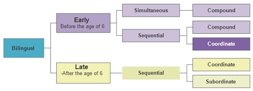
The diversity of the two cultures could evoke a desire to be accepted by both linguistic groups (Baker 2014). This desire could increase an individual’s motivation to maintain proficiency with both languages. By contrast, personal circumstances may give a bilingual, with an identical upbringing, the desire to belong to one of the cultures more than the other. The extent to which bilinguals feel accepted and attached to each cultural group will impact their language use. Montrol (2008), and Vago and Seliger (1991) argue that vocabulary is needed to maintain grammar and both are needed to maintain the lexicon, the research shows that disuse of L1 or L2 can cause the phonology and morphosyntax of the L1 or L2 to decay. These factors could affect the degree of proficiency and the category of the bilingual individual over time.
The arguments presented in this section show that language is dynamic and can change due to different needs of bilinguals. The way culture and language interact does raise the question: how do age and culture impact language use and competence?
The proficiency of an L2 learner can affect their categorisation and the degree of proficiency achieved could rely on different factors (Saville-Troike 2010:177-178): Social Context Social Experience Relationship between L1 and L2 Aptitude Motivation Instruction Age
Social context, social experience and the relationship between L1 and L2 can be grouped into The Impact of Culture as already discussed in section 2.1. Aptitude is the memory capacity and the analytical ability of a person, motivation is the purpose and desire of learning the language and instruction relates to how a language is taught in school. The existing literature (Hurford 1991; Pavlenko 2014; Silvanto and Rees 2017; Saville-Troike 2010; Thompson-Schill et al 2009) as already discussed, places an emphasis on age. Bilinguals that learn their languages after the age of six, learn the L2 with prior knowledge of the L1 (Saville-Troike 2010).
There is a common belief that children are more successful L2 learners than adults, the evidence for this is equivocal. Younger learners generally have an advantage in brain plasticity, in not being so analytical, in (usually) having fewer inhibitions and weaker group identity, and in having more years to learn the language before ultimate proficiency is judged. Older learners generally have an advantage in learning capacity, in analytic ability, in pragmatic skills, in greater knowledge of their L1, and in real-world knowledge. It is possible for older learners to achieve near native competence in an L2, but less likely. (Saville-Troike 2010:178)
This quote suggests that no matter the age, anyone could learn an L2 - young and old learners both have their own abilities to do so. However, achieving native-like competence by older learners seem to be “less likely” (Saville-Troike 2010:178).
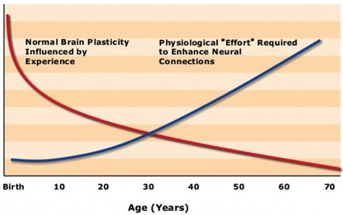
Figure 9 shows the gradual decrease of brain plasticity and increase of effort required to learn new things. Learning capacity is one factor which helps decide whether a late bilingual becomes a coordinate bilingual or a subordinate bilingual.
Someone that is an older subordinate bilingual does not imply that learning a new language and becoming a coordinate bilingual is impossible. Figure 9 suggests it might take a bit longer depending on the age of the learner to learn something new (i.e. it takes longer when someone is older compared to someone younger). The older the learner, the more important other factors become (e.g. aptitude, motivation or determination) to achieve a certain level of proficiency.
The evidence and arguments presented in section 2.1 suggest that categorising bilinguals on a macro scale gives the impression that bilinguals are similar and tied to their categories. However, at a micro scale, it suggests that due to individual differences within one category, bilinguals can show different degrees of bilingualism depending on the dynamics of their languages and life experiences. The differences that occur in the degree of proficiency suggest a link to the factors presented in sections 2.2 and 2.3. To further examine these categories and the different types of bilinguals within those categories, an empirical analysis is presented in the next chapter.
The existing literature provides an overview of how bilinguals are categorised into static categories, which seems to work at the macro level, but does not leave room for changes that occur at the micro level due to the dynamic flow of life. To illustrate this, an empirical analysis is presented that examines siblings from one bilingual German family. Examining members of a single family is to reduce the number of variables that are at play in large samples of bilinguals.
The evidence is gathered through a sociolinguistic questionnaire. The questions for the questionnaire were selected from the L2 Language History Questionnaire (LHQ) (Zhang et al 2014), which focusses on categorising bilinguals at the macro level. To maintain an open mind and not focus on the static categories, an adjusted version of the questionnaire is used to obtain data for this dissertation (these adjustments are discussed in Design and Procedure). It includes different dimensions (e.g. geographical timeline, dominant language timeline, and a categorisation timeline) to demonstrate the dynamics of bilingualism for each participant at the micro level. The micro level data evaluates whether the type of bilingualism remains static, or is dynamic from childhood into adulthood, and what the factors are that cause the category of bilingualism to change.
The participants are four siblings with German parents. To protect their anonymity pseudonyms are used (figure 10). Age Education Born in Lives in Sander Germany Portia PhD Germany Janice Australia Charles Germany Figure 10. The participants
There are several key questions which enable to categorise different types of bilinguals. The questions provide a sociolinguistic outline of the participants and cover each of these factors: The nature of their bilingualism (i.e. how and why they became bilingual). The order and age of their language learning (i.e. what their L1 and L2 are; early and late bilingualism; categories according to Romaine (1995) and Weinreich (1968). The functions of their languages (i.e. what their dominant language is/was). The social aspects of their languages (i.e. culture, social contacts, motivation). Each aspect is evaluated from various stages (i.e. age) of their lives.
Parent’s Birth Country and Language Proficiencies There are two questions to establish the heritage language and the nature of the bilingualism of the siblings. The language level gathers information of the parent’s native language, and any other language to evaluate whether the parents are bilingual. Romaine’s (1995) typology of bilingualism makes a distinction between parents who share L1 or L2 with their children and those that do not (Types 1-5).
Languages of the Participants
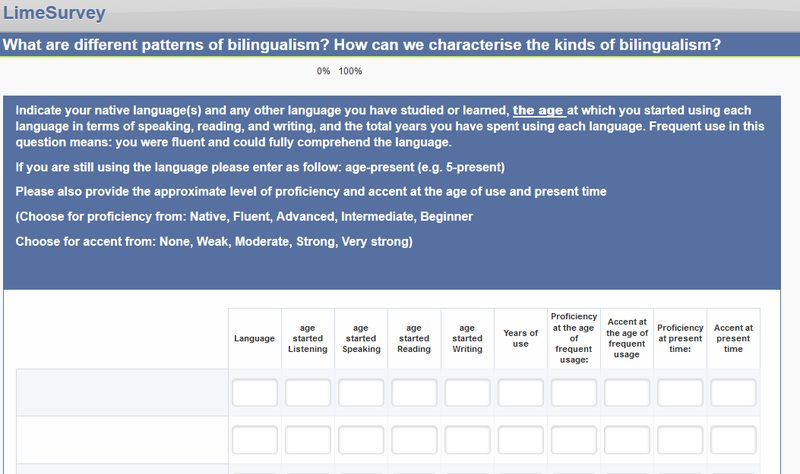
Figure 11 is a relevant piece of the actual questionnaire to understand if the siblings still use the languages they learned during their childhood and if they were/are proficient in those languages. This question aims to succinctly gather the relevant data such as age, context of language learning (i.e. at what age the participant started learning the language), length of exposure (which can be compared to length of residence), length of instruction and level of language proficiency.
The nationality of the participant provides an indication of their possible dominant language(s)/heritage language. However, this question was adjusted to eliminate the assumption that all siblings were born in the same country, had/have the same exposure to languages, and that they remained in the same country (impact of culture). This question also connects language use to a place of residence during the different phases in the participants’ lives.
Establishing the Dominant Language and Social Language Use The LHQ lists each of the social groups in separate questions. Research shows that a combined approach to the question is easier to answer and less time consuming as a single question (Sonderen, Sanderman and Coyne 2017). The participants were presented with five questions to establish their language use in the formal (i.e. education, work, colleagues) and informal (i.e. home, family, partner, friends) domains. This provides information if the languages were used through various stages of the participants’ lives (i.e. age) have helped them to maintain/sustain in their categories. To produce a reliable trajectory for each participant, it is important to repeat these questions in different forms throughout the questionnaire which reduces or prevents response bias (Sonderen, Sanderman and Coyne 2017). If the participants show differences in answers, the participants will be contacted for further questioning via email.
Figure 12 is an example of one social setting in different phases of the participant’s live, broken down by age. The purpose of these questions is to understand how both languages are used and maintained within different social groups (i.e. language dominance) over the years.
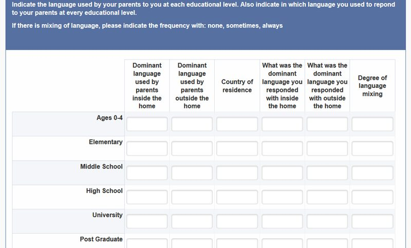
Language of thought, gives the opportunity to add naturally produced language to the equation, to provide extra information about how and if the participants use both languages naturally. The question involves in which language the participants: think, talk to themselves, express emotions, dream, do calculations, remember numbers, remember colours. This question is asked in the present time, because the recollection of these answers in their childhoods might cause implications for their explanations due to the pliability of memory (Loftus 1975).
The unconscious usage of language(s) illustrates the dominance of language, as thought happens naturally, effortlessly and is not controllable most of the time (Grosjean 2010:CH11; Pavlenko 2011). Ardila et al. (2000) conducted an experiment with native Spanish speakers that reside in the USA, to determine the interfering effect of the L2 on the L1 by measuring syntactic comprehension, verbal memory and calculation skills. The participants performed better in English (L2) for the verbal memory category. However, the calculation abilities were optimal in Spanish (L1), due to the calculations being learned in the L1 as a child.
Cultural Identity
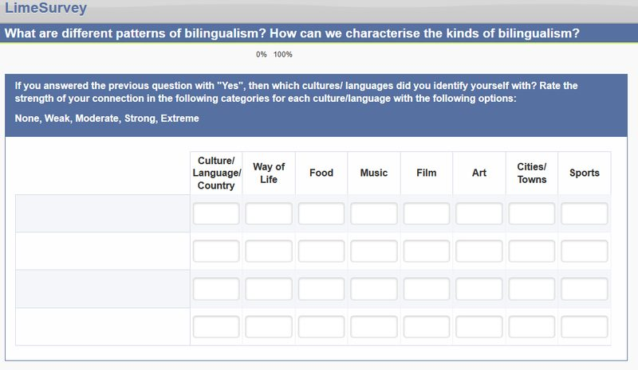
In contrast to the construction hypothesis, emotional memories and feelings can be recalled correctly due to the impact on a person’s life experience (Lerner & Keltner 2000). To analyse the participant’s cultural identities, and connection to each country with its culture, this question (figure) was asked twice. First, how they identified themselves as a teenager and second, how they identify themselves now. Figure 13 illustrates the question. This question may show change of their cultural values linked to age, relevance, and language use.
The voluntary participants reside in different countries with different time zones. To accommodate each participant, an online questionnaire is preferable to a face to face interview. In addition, a questionnaire is a standard, unbiased method of gathering data. The questionnaire analyses a small sample size and gathers data quantitatively, with follow up questions via email to elaborate answers, these answers deliver qualitative data. Thus, it can be argued that the results are a combination of both methods.
The participants receive an information sheet and each participant has to sign the consent form (Appendix 7.3) before receiving the questionnaire. The Tier 1 approval has been obtained from the University of Brighton. The participants are given a deadline of 12 days to complete the task, this gives them enough time to find a convenient time to finish the task which should take 30 minutes. The information sheet and consent form are summarised and repeated on the initial page of the questionnaire (these documents are available in appendix 7.3 and 7.5).
The paper version of the questionnaire is available in Appendix 7.5. The online version is available at: http://mirrorchecker.com/questions/
This section provides the analysis of the collected data. Full results of the participants are grouped in tables in Appendix 7.2 and the original templates are available in Appendix 7.5.
The parents have a proficient level of English with a moderate German accent (appendix 7.1-table 1a). The children were exposed to German (the parent’s native language) at home and started learning English in school as an L2 (appendix 7.1-table1b). At a macro level perspective, according to Romaine (1995) the family is: Type 3: non-dominant home language without community support. The parents have the same native language, which is German. Culturally, German is the non-dominant language and English was the dominant language as the family lived in Australia and the USA. The parents spoke their native language with the children, because they knew that the children would learn the dominant language as an L2 (English) in school. This type 3 family was in a country without the support of extended family members nor L1 community (appendix 7.1-table 1c). According to the literature, the children in this Type 3 family are sequential bilinguals (Saville-Troike 2010). At a macro level perspective, according to Weinreich (1968): The siblings in this family would be compound bilinguals, due to lack of exposure to the German (L1) culture, the siblings learned the two languages with one conceptual meaning.
At a micro level (i.e. individually), the siblings would be categorised as: Early/ Late Bilinguals Simultaneous/ Sequential Weinreich Romaine Sander Late Sequential Coordinate NO TYPE Portia Early Sequential Compound Type 3 Janice Early Sequential Compound Type 3 Charles Early Simultaneous Compound NO TYPE Figure 14. Micro level categories When the siblings are viewed individually, it becomes clear that Sander and Charles had a different language experience compared to their other two siblings. This shows that Romaine’s typology does not work at an individual level for some people, because she focusses on early bilinguals which is why Sander cannot be categorised. The reason why Charles does not fit in Romaine’s (1995) types is discussed in section 4.5. The participants are evaluated one at a time to analyse their sub-lifetime language experiences and an individual timeline is created for each sibling. In section 4.6 the siblings are compared and evaluated together.
Sander is the oldest sibling at the age of 53 and was born in Germany. In his answers (appendix 7.1, table 2), Sander stated that he started listening to English at the age of seven, started speaking at the age of nine, reading at the age of ten and writing at the age of eleven. Therefore, it was important to ask him to elaborate on how and why this spread-out difference occurred in his language experience, to accurately build his timeline. Sander stated (appendix. 7.1-table 3) he attended school in Germany until the age of eleven then moved to Australia with his family. He thinks he started listening to English via television at the age of seven. At the age of nine and ten, he was sent to England for a week each summer to learn English with a host family. This could have been to prepare him for the move to Australia, but he is not entirely sure (Appendix 7.1-table 3). At the age of ten, he had English classes in the German school system.
At the age of eleven, the family moved to Australia. The parents spoke only German at home with minimal, but “existing usage” of the English language (Appendix 7.1-table 3). Upon arrival in Australia, Sander spent three months at an English program for foreign children in Brisbane. After three months, his teacher advised the parents that Sander should complete the seventh grade at the local school due to his high proficiency in the English language. As discussed in section 2.3, Sander’s age most likely contributed to his rapid improvement and language learning ability. Of course, natural aptitude and motivation cannot be ignored. The family moved to the USA when Sander was thirteen, where he adapted his Australian accent to the American accent (appendix 7.1-table 3).
According to the literature in chapter 2, Sander is a late bilingual that learned his L2 sequentially. Since he learned the German language and culture, before he started learning his L2 (English). This would make Sander a coordinate bilingual, according to Weinreich (1968), with two separate conceptual systems of meaning in both languages. As a late bilingual, Romaine’s categories do not apply to Sander.
According to Weinreich (1968), Sander is a coordinate bilingual, because he learned the languages and cultures separately and sequentially as a late bilingual. Sander had to switch from German to English at the age of eleven. At this age, a child has not captured the full vocabulary of the L1, because children start to learn complex vocabulary and grammar in middle school (Baker 2014; Caldas 2006; Yip and Matthews 2007). It is possible that everything Sander learned in middle, high school and university in his L2 was equivalent to his peers who were learning in their L1. In this case, Sander would create conceptual representations of the American culture with the new vocabulary. If Sander’s exposure to the American culture meant that, over time, he built one representation for both languages, it could be argued that he became a compound bilingual. This theory raises other questions which could form the basis of future research: How dynamic are mental representations of vocabulary in the lexicons of bilinguals? What is the effect of language attrition on mental images of a bilingual’s lexicon?
Until the age of eleven Sander was exposed to German only. Between the ages of eleven and 20 he used both his L1 and L2. According to the evidence, during this time, his parents would speak German to Sander, but he would respond in English (appendix 7.1- table 4). After the age of 16, Sander only uses English outside the home. The only time Sander would use German was with his parents inside the home and when he visited family in Germany. This suggests that when Sander left the home environment he solely stimulated his L2 lexicon, and lost the stable German language which he would hear from his parents daily. As discussed in the literature review, grammar needs vocabulary to maintain a language (Montrol 2008; Vago and Seliger 1991). Sander is now 53 years old and his social community with its language use has stayed the same since university (appendix 7.1-table 5) where the L2 is the dominant language. If Sander has become a compound bilingual who only stimulates the L2, it may be that he is losing proficiency in his L1. This suggests he is a dominant L2 compound bilingual.
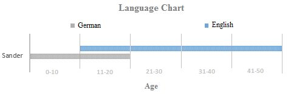
Figure 15 shows the flow of Sander’s language use over the years. Sander may have started as a monolingual German speaker and became a coordinate bilingual in his early years, but the evidence shows that during and since his education in the USA, Sander uses English at home, work, with friends, and even with his siblings. His language of thought is in English (appendix 7.1-table 6). Sander thinks, dreams, expresses emotions, talks to himself, remembers colours and numbers in English. Sander completes calculations in English (L2) whereas regardless of age, calculations are known to be remembered in the L1, because they were learned in the L1 (Lin, Imada and Kuhl 2011; Ardila et al 2000). One possible reason why he remembers calculations in the L2 could be because he learned complex calculations at middle and high school in the L2. Another possible reason is the disuse of the L1 for more than 20 years.
Macro Level (Family) Micro level (Individual) Early and Sequential Late and Sequential Romaine: Type 3 Romaine: has no type for Sander Weinreich: Compound Weinreich: Coordinate Figure 16. Initial categorisations Analysis of Sander’s geographical timeline, age and his exposure to the English language, shows the possibility of Sander changing categories from a coordinate to a compound bilingual that dominantly uses the L2 because he has no reason to use the L1. To show the crossover of categories more effectively, figures 17 and 18 shows his sub-lifetime bilingualism. Sub-lifetime Bilingualism of Sander (“micro-micro” level) Age Dominant Language German German English English Non-dominant Language N /A Intro to English German German
Country of Residence Germany Germany Australia Figure 17. Dynamics of Sander’s bilingualism
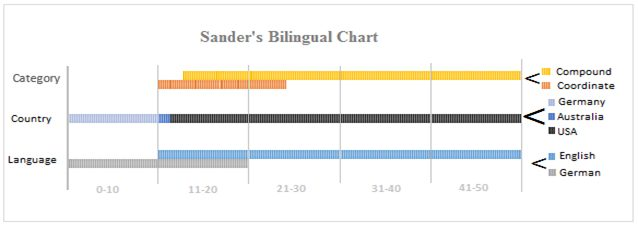
Figure 18 shows the dynamic flow of Sander’s language use, from German to both languages during puberty, and using only English as an adult. A parallel, is shown with the country (i.e. culture dominance) and starting his own life without the influences of his parents. Sander’s way of learning the L2 and his dominant L2 use, suggest that Sander transitioned to a compound bilingual in adulthood.
At the age of 42, Portia is the second oldest sibling. She was born in Germany and moved to Australia at the age of one. After two years, the family moved to the USA. Analysis of Portia’s data shows she learned German as her L1 at home and English as her L2 when she started school (appendix 7.1-table 1b). Portia has noted in her answers that she probably started listening to English between the ages 1-2 and probably started speaking between 2-4 (appendix7.1-table7a). It could be suggested Portia picked up the English language outside the home and on television, but there is no clear evidence nor actual memory of that age. The only reliable evidence is that the parents used German in the home environment and the children learned English in school. Therefore, it suggests that she learned her languages sequentially as an early bilingual, and according to Weinreich (1968) she is a compound bilingual. The information above, in combination with the data about her parents means she fits Romaine’s (1995) type 3 bilingual.
Portia’s language development shows that in the home environment her parents spoke in German. Portia responded in German in her early years (ages 0 - 11), but that changes when she starts middle school and responds only in English (appendix 7.1-table 7d). Analysing Portia’s data to create a geographical timeline, it became clear that she changed her dominant language (i.e. countries) a few times (appendix 7.1-table7c). At the age of 17, Portia moves back to Germany to finish high school and starts her degree in German. All dominant areas (i.e. home, social, education, work) switched back to her L1 (German) between the ages 17-28. This course of action made her learn the cultural values and mental representations of the German language which she was missing as a compound bilingual. Thus, changing Portia’s category to a coordinate bilingual.
At the age of 28, Portia moves to the Netherlands to start her PhD. She stays there until the age of 34 (appendix 7.1-table 7c). During this period, she starts to learn Dutch, and becomes an advanced Dutch speaker (appendix 7.1-table 7a). Portia was using Dutch, German, and English, in the new dominant environment of the L3 (Dutch). At this point, Portia became multilingual.
At the age of 34, Portia moved to the UK, where her dominant language switched to her L2 (English). From that time until now Portia has maintained her L1 and L2 (appendix 7.1-table 7e). She speaks German with her German colleagues, parents, German friends, family and ex-colleagues from Germany. Portia uses English in her everyday life in England and with her partner at home. The evidence provided (appendix 7.1-table 8), show that Portia’s dominant language is English, because thinking, talking to herself and expressing emotions are performed in English, whereas dreaming, her ability to perform calculations, remember numbers and colours are performed in both languages. The evidence provided by Portia supports the idea that she is uses both languages by maintaining ties and interacting with both communities, may be the reason for her balanced usage of both languages.
Macro Level (Family) Micro Level (Individual) Early and Sequential Early and Sequential Romaine: Type 3 Romaine: Type 3 Weinreich: Compound Weinreich: Compound Figure 19. Visual of the initial expectations
Analysis of Portia’s geographical timeline, age and her exposure to both languages, support the idea of Portia being a balanced coordinate bilingual. Figure 20 shows her sub-lifetime bilingualism. Sub-lifetime Bilingualism of Portia (“micro-micro” level) Age Dominant Language German English English German English German German Dutch Dutch English English Non-dominant Language English
German German English English English German German Country of Residence Germany Australia Germany Germany Germany Netherlands Netherlands Figure 20. Dynamics of Portia’s languages and residencies The evidence provided from the questionnaire, shows the dynamic flow of her languages due to her choices in life (i.e. education, career, country, partner).
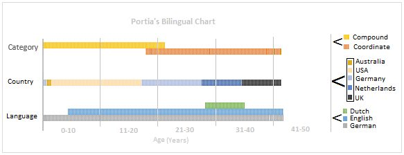
Figure 21 shows the dynamics of Portia’s languages and residencies (i.e. cultural dominance) over time. Her life experience is an example of how changing the language environment can affect the language of a bilingual and their categorisation at an older age.
Janice is the third sibling, she is 40 years old and was born in Australia. She moved to the USA when she was one years old and still lives there (appendix 7.1-table 9). Similar to Portia, Janice learned her languages sequentially (appendix 7.1-table1b and 10b). She spoke German at home and English when she started school. According to Romaine’s (1995) definition, Janice is a type 3 bilingual, and according to Weinreich (1968) she is a compound bilingual. Janice later claims to be equally proficient in both languages at the present time and she has learned both languages from birth (appendix 7.1-table 10a). These claims are investigated and explained in the following section.
The evidence shows that Janice used German at home while growing up, and that English was her dominant language outside the home. Janice’s parents always spoke German but she always responded in the L2 (English) (appendix 7.1-table1b). It could be that Janice learned English from her siblings, or she remembers it this way because the L2 has dominated most of her life. The data is not detailed enough to prove this, and Janice has not responded to emails to provide extra information.
In social contexts, Janice has always used English. The only time she would speak German without any degree of language mixing, was with her parents (appendix 7.1- table 11). Janice’s reading and writing abilities are always in English, which raise the possibility that she may not be proficient enough to perform these skills in German. As demonstrated in chapter 2, children learning their L2 in school could experience some attrition of L1 skills (Saville-Troike 2010), and grammar needs vocabulary for language to be maintained in the lexicon, because disuse of L1 or L2 can cause the phonology and morphosyntax of the L1 or L2 to decay (Montrol 2008; Vago and Seliger 1991). This suggests that regardless of Janice’s perceptions, her German was most likely never at native level, but without a proficiency test there is no hard evidence to assume these suggestions. The answers that Janice did give about her recent thoughts can clarify her dominant language. Janice learned calculations, numbers and colours in English at school, which may explain why she never remembers these in German (appendix 7.1-table 12). The majority of the time Janice thinks, talks to herself, expresses emotions, and dreams in English. This is an understandable result as English has been her dominant language all her life. These results suggest she is a dominant L2 compound bilingual.
Macro Level (Family) Micro level (Individual) Early and Sequential Early and Sequential Romaine: Type 3 Romaine: Type 3 Weinreich: Compound Weinreich: Compound Figure 22. Visual representation of previous categorisations
Sub-lifetime Bilingualism of Janice (“micro-micro” level) Age Dominant Language German English Non-dominant Language English
German Country of Residence Australia Figure 23. Visual representation of Janice’s Language experience
Analysis of Janice’s geographical timeline, age and her exposure to both languages, show her to be a dominant L2 (English) compound bilingual.
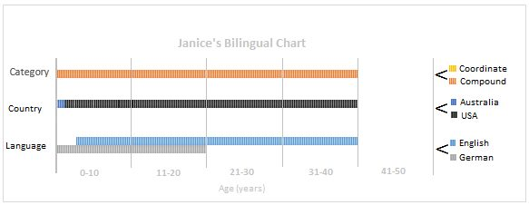
Figure 24 illustrates her stable German language in the home environment provided by her parents, and that switches completely to English when she moves out of the environment.
Charles is the youngest sibling at the age of 36 and was born in the USA. Analysis of Charles’ data shows that he started speaking English before he went to school (appendix 7.1-table 13). The logical explanation is that Charles probably learned English from his siblings, because by the time Charles was born, all his siblings were attending school and already had the knowledge of the L2. All siblings have provided evidence in their answers (appendix 7.1-table 14) that they always mixed languages between each other. This makes it understandable why Charles started speaking English before he attended school. Research shows that the language used by older siblings can be considered the dominant language for younger siblings in the home environment (Calsas 2006; Yip and Matthews 2000, 2007).
Charles does not completely fit Romaine’s (1995) type 3 bilingual, because Charles learned the two languages simultaneously, but he learned the L2 (English) from his siblings and not from his parents. There is no evidence that his parents spoke English inside the home which supports this theory (appendix 7.1-table1b). Charles is according to Weinreich (1968) a simultaneous compound bilingual.
According to Charles, he is the only sibling that believes to be non-native German speaker (appendix 7.1-table 13). However, his results show the contrary, which is discussed in the next section.
Charles consistently used German and English at home as a child in the USA. His parents always spoke German and he always responded in German, and he spoke in English with his siblings and friends, until the age of eleven. Upon starting middle school until the age of 18, Charles began responding only in English (appendix 7.1-table 1b). He self describes having a “moderate” accent when speaking German (appendix 7.1-table 13). At this stage of life Charles was a dominant L2 compound bilingual.
At the age of 18, Charles begins to read and write in German (appendix 7.1-table 13), this shows motivation to learn and improve his German language. At the age of 19, Charles goes to Germany for a year where he is exposed only to German. He returns to the USA, where he is exposed to English and German. Charles moved to Germany when he was 22 and has lived there ever since (figure 25).
When Charles started his undergraduate degree in Germany, he was not able to finish it due to his proficiency of German at that time (appendix 7.1-table 15). However, German became his dominant language since the age of 22. He now lists his accent as “weak”, demonstrating that time of exposure to the dominant language, motivation and desire to be accepted by the people, can alter language use (Baker 2014). Living in a country allows the mental representations of that culture to be built in the lexicon. These ideas combine to suggests that Charles has transitioned from a compound bilingual to a coordinate bilingual.
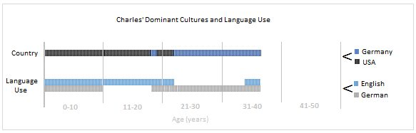
Figure 25 illustrates Charles’ language use and the countries with their dominant cultures and demonstrates his switch from balanced language use (i.e. only L2 from ages 0-18) to both languages between the ages 18-22. When he moves to Germany permanently (age 22), German becomes his dominant language (ages 22-34), illustrating Charles’s transition over time.
For the last 2 years Charles has been motivated to speak both languages because he wants to raise his child bilingually (appendix 7.1-table 15). This is another demonstration that motivation can impact bilingualism: Charles is now a balanced coordinate bilingual.
Macro Level (Family) Micro level (Individual) Early and Sequential Early and Simultaneous Romaine: Type 3 Romaine: No type Weinreich: Compound Weinreich: Compound Figure 26. Visual of the initial categorisation Analysis of Charles’ geographical timeline, age and his exposure to both languages, show an example of a compound bilingual moving to the country of the L1 at an older age and thus becoming a balanced coordinate bilingual. Figure 25 shows the sub-lifetime bilingualism of Charles. Sub-lifetime Bilingualism of Charles (“micro-micro” level) Age Dominant Language English
English German German
German English Non-dominant Language German German English English Country of Residence Germany Germany Figure 27. Representation of Charles’ dynamics of language and residencies
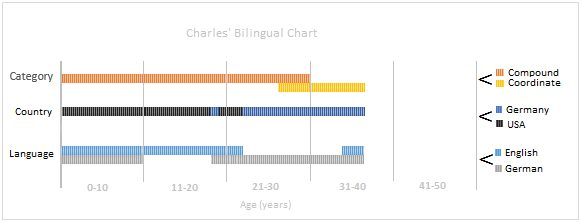
The evidence demonstrates that Charles is different to his siblings and that could be due to multiple reasons: He learned his languages simultaneously He used English more than German until the age of 18 He started using German and was exposed to the culture from the age of 22. His transition from a compound to a coordinate bilingual might have taken longer, due to age and natural aptitude, to gain higher proficiency in the L1 and learn its mental representations.
The following table shows an overview of the siblings at a macro level (i.e. as a family), micro level (i.e. as an individual in early life) and micro-micro level (i.e. as an individual in present time). It demonstrates the differences and the details that are lost due to analysis at different granularities. The changes between macro and micro level are highlighted in green whereas the micro level to micro-micro level changes are highlighted in pink. Macro Level (Family) Micro level (Individual early life) Micro-Micro Level (Individual present time) Sander Early and Sequential Late and Sequential Late and Sequential
Romaine: Type 3 Romaine: No type Romaine: No type
Weinreich: Compound Weinreich: Coordinate Weinreich: Compound Portia Early and Sequential Early and Sequential Early and Sequential
Romaine: Type 3 Romaine: Type 3 Romaine: Type 3
Weinreich: Compound Weinreich: Compound Weinreich: Coordinate Janice Early and Sequential Early and Sequential Early and Sequential
Romaine: Type 3 Romaine: Type 3 Romaine: Type 3
Weinreich: Compound Weinreich: Compound Weinreich: Compound Charles Early and Sequential Early and Simultaneous Early and Simultaneous
Romaine: Type 3 Romaine: No type Romaine: No type
Weinreich: Compound Weinreich: Compound Weinreich: Coordinate Figure 29.
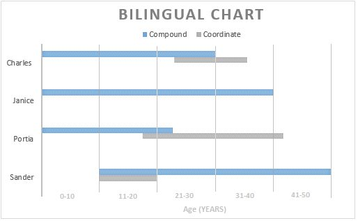
Figure 30 demonstrates that the trajectory of each sibling is unique and that being assigned a single, static category becomes inaccurate over time due to life choices of each individual. The evidence in the analysis has shown: Sander moved to the country of the L2 (English) at the age of eleven as a monolingual, adopted the L2 in three months and thus became a coordinate bilingual then transitioned to a compound bilingual over time, that only uses English. Portia was a compound bilingual, she moved to Germany at the age of seventeen which gave her the opportunity to learn and adapt to the language easily due to her natural aptitude and age. She is now a coordinate bilingual that uses both languages. Janice was a compound bilingual in the country of the L2 (English) and it became her dominant language. She remains a compound bilingual who dominantly uses English. Charles was a compound bilingual and is now a coordinate bilingual that uses both languages. It is interesting that Portia and Charles moved to Germany and undertook the same transition but hers was much more rapid. Both literature and data suggest, natural aptitude and age are the only two differences which could cause this to be more rapid in Portia’s case than Charles’. Janice and Sander had a different upbringing and used languages differently until the age of 13. Since that age, Janice and Sander have had the same language experience. This strongly suggests that regardless of being an early or late bilingual, life choices can alter language use and cause two individuals, from different categories, to end up in the same category.
To answer the questions at the beginning of chapter 2, with the information provided in chapter 2 and evidence in chapter 4, it can be said: The existing literature focusses primarily on children and in particular, children within the home environment. Is it possible for a bilingual’s category to change as they transition into adulthood? Yes, it is possible. The evidence shows that, even within one family, individuals have entirely different “bilingual journeys” through life, based on their life choices. Can a change in environment (e.g. culture or country) affect language use and therefore change the categorisation of a bilingual? Yes, not only is it possible, but a change in environment can cause a category change. Sander, Portia and Charles changed their original countries which have affected their language use and therefore their categories.
Can the factors which impact language proficiency affect the categorisation of a bilingual? Yes, but they are heavily interdependent and interrelated. The factors which impact language proficiency are: culture, aptitude, motivation, instruction and age. For example, being young does not, in and of itself, make someone bilingual. A high natural ability with languages, without the motivation to learn a second language, would not necessarily result in a bilingual individual. To illustrate this using data from the siblings, Sander changed category faster than Portia and Portia changed faster than Charles. Portia moved categories more rapidly than Charles, because she moved to Germany younger, perhaps had a higher aptitude, and was more motivated to finish high school. Sander learned his L2 faster (3 months), because he was younger, and he had different motivations and instructions than Portia and Charles.
Throughout this investigation there have been several factors that could be improved for a seamless analysis. Asking participants to self-rate their proficiency gave inconsistent and potentially misleading data. For example, Janice rates herself as native in both languages yet other evidence suggests this is not the case. Charles also provided confusing data by estimating his proficiency lower than his other evidence would suggest. The study also asked participants to rate their proficiency in the past, which could cause inaccuracies due to the fallibility of memory and recall. A proficiency test would avoid these issues and give a clear, uniform way of standardising the proficiency level between multiple participants. The “ideal scenario” would be for the participants to undergo a standard proficiency test every 5 years. This would not only give an unbiased result, but also show their progress efficiently throughout life. A questionnaire could then be used to cover any topics not covered by the proficiency test such as nature of their bilingualism, country of residence and social language use. An interview would not be practical due to the participants being in different countries.
The question regarding culture should have had two options: monocultural or bicultural. This became apparent when Charles initially answered “No” to the question: do you feel bicultural? Reviewing the analysis, the question became irrelevant as a whole, because the other questions provided enough information to justify each participant’s category. However, the question can be replaced by a question that is relevant: did you or your family have a community of the L1 while living in the country of the L2? Having this question in the questionnaire would have provided an answer if the participants were raised with concepts of both languages separately (i.e. coordinate bilingualism), and would have avoided contacting participants afterwards.
Finally, the software used to create the study presented limitations on the format of the questions and thus the way the questions were asked. More flexible software would have helped gain answers in a more accurate format. The output of the data from the software made analysis of the data extremely difficult. It took an extremely long time to generate data in any meaningful format. Again, a better tool would have helped this and allowed more time for analysis and further research.
The ideal situation to evaluate this questionnaire would have been as a longitudinal study, where participants complete a questionnaire and proficiency test every five years from an early age. In addition, the questions that arose from Sander’s data: How dynamic are mental representations of vocabulary in the lexicons of bilinguals? What is the effect of language attrition on mental images of a bilingual’s lexicon? These questions should be researched as a longitudinal study as well. That way the data will be accurate, precise, and easy to analyse. These studies can give valuable insight to the field of psycholinguistics.
The aim of this dissertation was to understand how we can categorise different types of bilinguals. The literature review illustrated the way bilinguals learn their languages assigns them to a category and the traditional views is what makes a bilingual’s category static. These traditional views seem to be outdated in the modern multicultural world of today.
Research conducted with the bilingual family demonstrates that this is not the only factor which can impact categorisation and as such, categories are not static, they are as dynamic as language. The research has also shown that bilingualism is a dynamic phenomenon with different patterns: the patterns and variables involved are based on an individual’s life choices. Analysis of the family and individual siblings demonstrates that critical data is lost depending on the scale at which they are initially or ultimately categorised. Data is lost at each level of categorisation (e.g. sub-lifetimes to individual, individual to family and family to population).
These findings suggest that categorisation provides minimal value and can be argued to be irrelevant and language proficiency is a more effective indicator of an individual’s current state of bilingualism.
Ardila, A., Rosselli, M., Ostrosky-Solís, F., Marcos, J., Granda, G. and Soto, M. (2000). Syntactic Comprehension, Verbal Memory, and Calculation Abilities in Spanish-English Bilinguals. Applied Neuropsychology, 7(1), pp.3-16.
Baker, C. (2014). A Parents' and Teachers' Guide to Bilingualism. 4th ed. Channel View Publications.
Bialystok, E. (2001). Bilingualism in development: Language, literacy, and cognition. Cambridge: Cambridge University Press.
Boroditsky, L. (2017). How Does Our Language Shape The Way We Think? | Edge.org. [online] Edge.org. Available at: https://www.edge.org/conversation/lera_boroditsky-how-does-our-language-shape-the-way-we-think [Accessed 18 Apr. 2017].
Caldas, S.J. (2006). Raising bilingual-biliterate children in monolingual cultures. Clevedon: Multilingual Matters.
De Houwer, A. (2007). An Introduction to Bilingual Development. Clevedon: Multilingual Matters.
Field, F. (2011). Bilingualism in the USA: The case of the Chicano-Latino community. Amsterdam: John Benjamins Publishing Co.
Grosjean, F. (1982). Life with Two Languages. Harvard: Harvard University Press.
Grosjean, F. (2010). Bilingual. 1st ed. Cambridge: Harvard University Press.
Gynan, S. (2001). Language Planning and Policy in Paraguay. Current Issues in Language Planning, 2(1), pp.53-118.
Heredia, R. and Cieślicka, A. (2014). Bilingual Memory Storage: Compound-Coordinate and Derivatives. Foundations of Bilingual Memory, pp.11-39.
Hoffmann, C. (1991). An introduction to bilingualism. 1st ed. London: Routledge.
Lerner, J. and Keltner, D. (2000). Beyond valence: Toward a model of emotion-specific influences on judgment and choice. Cognition and Emotion, 14(4), 473-493.
Li, P., Zhang, F., Tsai, E., Puls, B. (2014). Language history questionnaire (LHQ 2.0): A new dynamic web-based research tool. Bilingualism: Language and Cognition, 17(3), 673-680. DOI: 10.1017/S1366728913000606
Lin, J., Imada, T. and Kuhl, P. (2011). Mental Addition in Bilinguals: An fMRI Study of Task-Related and Performance-Related Activation. Cerebral Cortex, 22(8), pp.1851-1861.
Loftus, E. (1975). Leading questions and the eyewitness report. Cognitive Psychology, 7(4), pp.560-572.
Pavlenko, A. (2011). Thinking and Speaking in Two Languages. Toronto: Multilingual Matters.
Pavlenko, A. (2014). The bilingual mind. 1st ed. Cambridge: Cambridge University Press.
Ramscar, M. and Gitcho, N. (2007). Developmental change and the nature of learning in childhood. Trends in Cognitive Sciences, 11(7), pp.274-279.
Romaine, S. (1995) Bilingualism. 2nd ed. Oxford: Blackwell.
Saville-Troike, M. (2010). Introducing second language acquisition. 1st ed. Cambridge: Cambridge University Press.
Shonkof, J., Boyce, T., Cameron, J., Duncan, G., Fox, N. and Greenough, W. (2017). The Timing and Quality of Early Experiences Combine to Shape Brain Architecture. [online] Center on the Developing Child at Harvard University. Available at: http://developingchild.harvard.edu/resources/inbrief-science-of-ecd/ [Accessed 26 Apr. 2017].
Silvanto, J. and Rees, G. (2017). What does Neural Plasticity Tell us about Role of Primary Visual Cortex (V1) in Visual Awareness? [online] NCBI. Available at: https://www.ncbi.nlm.nih.gov/pmc/articles/PMC3111426/ [Accessed 12 Mar. 2017].
Sonderen, E., Sanderman, R. and Coyne, J. (2013). Ineffectiveness of Reverse Wording of Questionnaire Items: Let’s Learn from Cows in the Rain. PLoS ONE, [online] 8(7), p.e68967. Available at: https://www.ncbi.nlm.nih.gov/pmc/articles/PMC3729568/ [Accessed 12 Mar. 2017].
Thompson-Schill, S., Ramscar, M. and Chrysikou, E. (2009). Cognition Without Control. Current Directions in Psychological Science, 18(5), pp.259-263.
Vago, R. and Seliger, H. (1991). First language attrition. Cambridge: Cambridge University Press.
Weinreich, U. (1968). Languages in contact: Findings and problems. Mouton: The Hague.
Yip, V. and Matthews, S. (2000). Syntactic transfer in a bilingual child. Bilingualism: Language and Cognition 3, 193-208
Yip, V. and Matthews, S. (2007). The bilingual child: Early development and language contact. Cambridge: Cambridge University Press.
The appendices contain private information about the research participants (tables and email correspondence), so they are not reproduced here. The full appendices can be obtained by universities upon request.